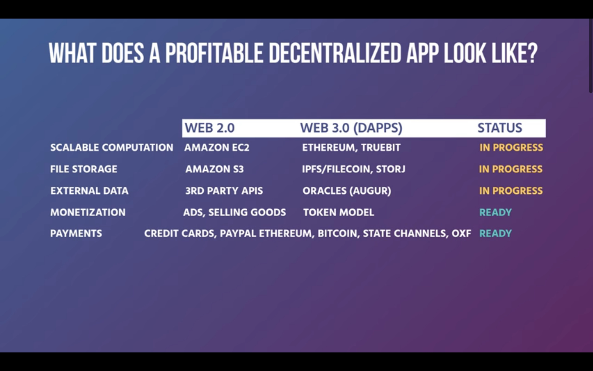
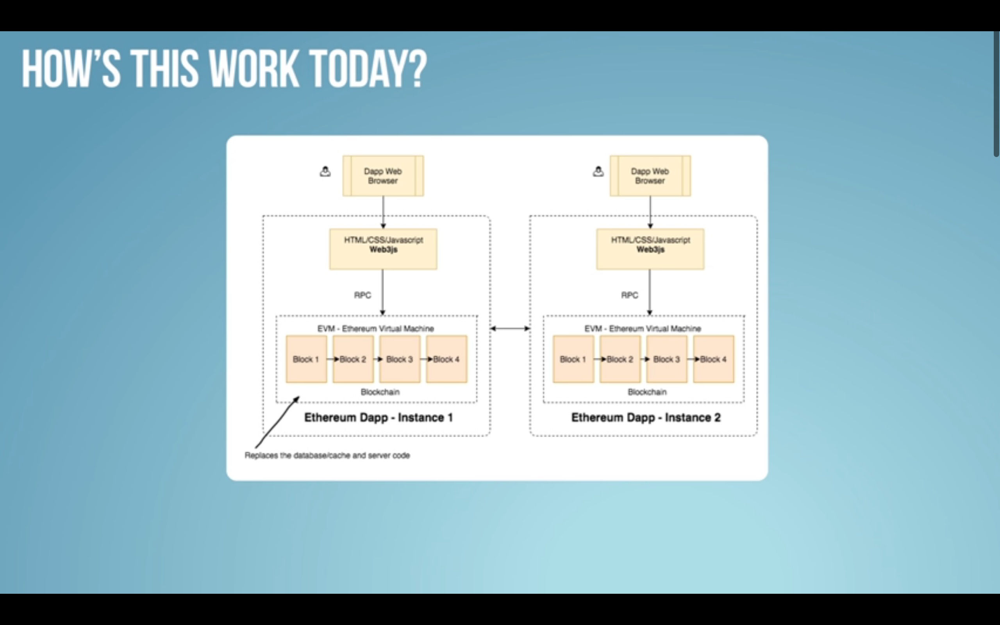

. Web 3.0
Intro
- Web 1.0 = linking things throughout internet
- Web 2.0 = linking things with apps
- Web 3.0 = turning centralised apps into decentralised protocols
Decentralized web != blockchains
Blockchains
* Systematize economics and law
* A protocol, not web-based
Web 3.0
- Inclusive set of protocols to provide building blocks for application makers
- Movement of associated tech and people making the web decentralised, verifiable, and secure
- Bridge blockchain network/protocol and decentralized web using web browser services to give users access to blockchain via apps/software
- Make everything verifiable e.g. smart contracts between product and user that are safer, more resilient, and ethical
Components
* Trustless infrastructure and interoperability
* Remove intermediaries
* Provide users with power and ownership over their data identity, security, and transactions
* Authentiate links between data and programs
* Add verifiability
* Facilitate autonomous transaction processing
* Integrate strong economic incentives to allow systems to run autonomously into the future
Open services
E.g. ETH/Bitcoin blockchains
* Open source
* Forkability
* Permissionless entry
* Offer service over time
* Optimise value
* Can maintain and scale infrastructure autonomously
Ethereum blockchain
ETH virtual machine
- SWARM - file/data storage
- Whisper - secure messaging
Smart contract programming languages
- Solidity, Serpent, LLL
- Foundation for jurisdiction i.e. proto-jurisdiction
- Computable law that is native to the web
- Decentralised web = encoding jurisdiction into web using blockchain systems
Running ETH nodes/blocks (ETH clients)
- Geth
- ETH
- Pyethapp
Software releases
- Frontier
- Homestead
- Metropolis
- Serenity
dApps


ETH blockchain architecture

Future avenues
- What will the web 3.0 browser look like? Single page, wallet, browser extension?
Code writup by Matt Malishev